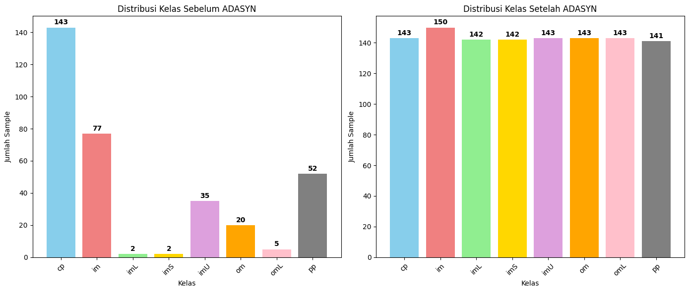
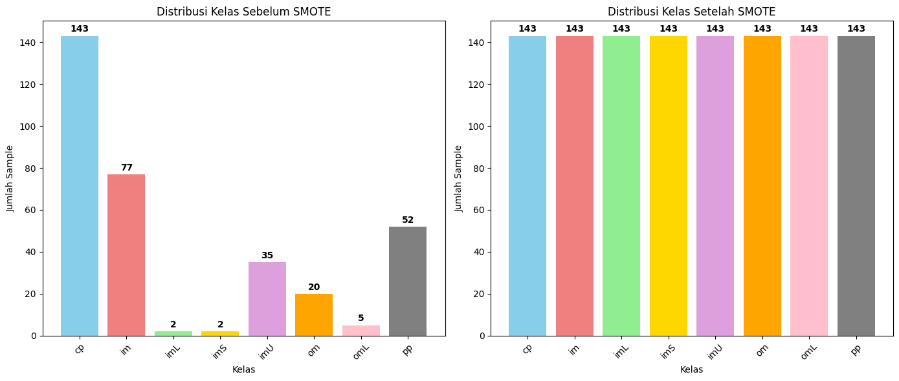

KLASIFIKASI NAIVE BAYES, RF, BAGGING#
import pandas as pd
import numpy as np
from sqlalchemy import create_engine
from sklearn.decomposition import PCA
from imblearn.over_sampling import ADASYN
from imblearn.over_sampling import SMOTE
import matplotlib.pyplot as plt
from sqlalchemy import create_engine
import pandas as pd
%pip install pymysql
%pip install imbalanced-learn
Requirement already satisfied: pymysql in /workspaces/PSD/ecoli-env/lib/python3.12/site-packages (1.1.2)
Note: you may need to restart the kernel to use updated packages.
Requirement already satisfied: imbalanced-learn in /workspaces/PSD/ecoli-env/lib/python3.12/site-packages (0.14.0)
Requirement already satisfied: numpy<3,>=1.25.2 in /workspaces/PSD/ecoli-env/lib/python3.12/site-packages (from imbalanced-learn) (2.3.3)
Requirement already satisfied: scipy<2,>=1.11.4 in /workspaces/PSD/ecoli-env/lib/python3.12/site-packages (from imbalanced-learn) (1.16.2)
Requirement already satisfied: scikit-learn<2,>=1.4.2 in /workspaces/PSD/ecoli-env/lib/python3.12/site-packages (from imbalanced-learn) (1.7.2)
Requirement already satisfied: joblib<2,>=1.2.0 in /workspaces/PSD/ecoli-env/lib/python3.12/site-packages (from imbalanced-learn) (1.5.2)
Requirement already satisfied: threadpoolctl<4,>=2.0.0 in /workspaces/PSD/ecoli-env/lib/python3.12/site-packages (from imbalanced-learn) (3.6.0)
Note: you may need to restart the kernel to use updated packages.
df = pd.read_csv("Data/ecoli.csv")
import pandas as pd
import numpy as np
import matplotlib.pyplot as plt
from sklearn.decomposition import PCA
from sklearn.preprocessing import StandardScaler
import pymysql
from imblearn.over_sampling import ADASYN, SMOTE
from collections import Counter
DATA TIDAK SEIMBANG#
if df is not None:
class_counts = df['class'].value_counts().sort_index()
print("Distribusi kelas:")
for class_name, count in class_counts.items():
percentage = (count / len(df)) * 100
print(f"{class_name}: {count} samples ({percentage:.1f}%)")
plt.figure(figsize=(12, 5))
# 1. Bar Chart
plt.subplot(1, 2, 1)
colors = ['skyblue', 'lightcoral', 'lightgreen', 'gold',
'plum', 'orange', 'pink', 'gray']
bars = plt.bar(class_counts.index, class_counts.values,
color=colors[:len(class_counts)])
plt.xlabel('Kelas')
plt.ylabel('Jumlah Sample')
plt.title('Distribusi Kelas E.coli')
plt.xticks(rotation=45)
# Tambah label angka di atas bar
for bar, count in zip(bars, class_counts.values):
plt.text(bar.get_x() + bar.get_width()/2, bar.get_height() + 1,
str(count), ha='center', va='bottom', fontweight='bold')
# 2. Pie Chart
plt.subplot(1, 2, 2)
plt.pie(class_counts.values, labels=class_counts.index, autopct='%1.1f%%',
colors=colors[:len(class_counts)], startangle=90)
plt.title('Persentase Distribusi Kelas')
plt.tight_layout()
plt.show()
# === 5. Status keseimbangan ===
max_pct = (class_counts.max() / len(df)) * 100
min_pct = (class_counts.min() / len(df)) * 100
ratio = max_pct / min_pct
print(f"\nKelas terbanyak: {class_counts.idxmax()} ({max_pct:.1f}%)")
print(f"Kelas tersedikit: {class_counts.idxmin()} ({min_pct:.1f}%)")
print(f"Rasio ketidakseimbangan: {ratio:.1f}:1")
if ratio > 3:
print("Status: TIDAK SEIMBANG")
else:
print("Status: RELATIF SEIMBANG")
else:
print("Data tidak tersedia!")
Distribusi kelas:
cp: 143 samples (42.6%)
im: 77 samples (22.9%)
imL: 2 samples (0.6%)
imS: 2 samples (0.6%)
imU: 35 samples (10.4%)
om: 20 samples (6.0%)
omL: 5 samples (1.5%)
pp: 52 samples (15.5%)
Kelas terbanyak: cp (42.6%)
Kelas tersedikit: imL (0.6%)
Rasio ketidakseimbangan: 71.5:1
Status: TIDAK SEIMBANG
if df is not None:
print(f"Data shape: {df.shape}")
print(f"Columns: {df.columns.tolist()}")
feature_columns = ['mcg', 'gvh', 'lip', 'chg', 'aac', 'alm1', 'alm2']
X = df[feature_columns]
y = df['class']
pca = PCA(n_components=2)
X_pca = pca.fit_transform(X)
dataframe_pca = pd.DataFrame(X_pca, columns=['PC1', 'PC2'])
dataframe_pca['class'] = y.values
# Plot scatter
plt.figure(figsize=(10, 6))
colors = ['red', 'blue', 'green', 'orange', 'purple', 'brown', 'pink', 'gray']
for i, class_name in enumerate(y.unique()):
mask = y == class_name
plt.scatter(X_pca[mask, 0], X_pca[mask, 1],
c=colors[i], label=class_name, alpha=0.7)
plt.xlabel(f'PC1 ({pca.explained_variance_ratio_[0]:.1%})')
plt.ylabel(f'PC2 ({pca.explained_variance_ratio_[1]:.1%})')
plt.title('PCA Scatter Plot - E.coli Dataset')
plt.legend()
plt.grid(True, alpha=0.3)
plt.show()
print(f"Total variance explained: {sum(pca.explained_variance_ratio_):.1%}")
print("PCA components shape:", X_pca.shape)
print("\nDataFrame PCA (5 baris pertama):")
print(dataframe_pca)
Data shape: (336, 9)
Columns: ['sequence_name', 'mcg', 'gvh', 'lip', 'chg', 'aac', 'alm1', 'alm2', 'class']
Total variance explained: 76.0%
PCA components shape: (336, 2)
DataFrame PCA (5 baris pertama):
PC1 PC2 class
0 -0.285601 -0.035274 cp
1 -0.290838 -0.330159 cp
2 -0.104676 0.015248 cp
3 -0.087943 0.122218 cp
4 -0.366268 -0.210366 cp
.. ... ... ...
331 0.084233 0.274803 pp
332 -0.139026 0.274116 pp
333 -0.111904 0.187103 pp
334 -0.106204 0.178851 pp
335 0.108764 0.281129 pp
[336 rows x 3 columns]
KLASIFIKASI DATA TIDAK SEIMBANG#
NAIVE BAYES (DATA TIDAK SEIMBANG)
# Pastikan Anda telah mengimpor semua yang dibutuhkan:
import pandas as pd
from sklearn.model_selection import train_test_split
from sklearn.naive_bayes import GaussianNB
from sklearn.metrics import accuracy_score, classification_report, confusion_matrix
# Drop kolom non-numerik (selain target)
X = df.drop(columns=['class'])
# Deteksi kolom numerik saja
X = X.select_dtypes(include=['float64', 'int64'])
y = df['class']
# Split data (stratify supaya distribusi kelas tetap proporsional)
X_train, X_test, y_train, y_test = train_test_split(
X, y, test_size=0.3, random_state=42, stratify=y
)
# Train Naive Bayes
nb = GaussianNB()
nb.fit(X_train, y_train)
# Prediksi
y_pred = nb.predict(X_test)
# Evaluasi
print("🔹 Akurasi Naive Bayes (data asli):", accuracy_score(y_test, y_pred))
print("\nClassification Report:\n", classification_report(y_test, y_pred))
print("\nConfusion Matrix:\n", confusion_matrix(y_test, y_pred))
# Baris ini (acc, report, cm) akan error lagi jika Anda tidak mendefinisikannya.
# Kemungkinan Anda bermaksud menampilkan nilai yang sudah di-print di atas.
# Jika Anda ingin menyimpan hasilnya:
# acc = accuracy_score(y_test, y_pred)
# report = classification_report(y_test, y_pred)
# cm = confusion_matrix(y_test, y_pred)
🔹 Akurasi Naive Bayes (data asli): 0.7920792079207921
Classification Report:
precision recall f1-score support
cp 0.91 1.00 0.96 43
im 0.75 0.65 0.70 23
imL 0.00 0.00 0.00 1
imS 0.00 0.00 0.00 1
imU 0.62 0.50 0.56 10
om 0.00 0.00 0.00 6
omL 0.50 1.00 0.67 1
pp 0.67 1.00 0.80 16
accuracy 0.79 101
macro avg 0.43 0.52 0.46 101
weighted avg 0.73 0.79 0.75 101
Confusion Matrix:
[[43 0 0 0 0 0 0 0]
[ 4 15 0 0 3 0 0 1]
[ 0 0 0 0 0 0 1 0]
[ 0 1 0 0 0 0 0 0]
[ 0 4 0 0 5 0 0 1]
[ 0 0 0 0 0 0 0 6]
[ 0 0 0 0 0 0 1 0]
[ 0 0 0 0 0 0 0 16]]
/workspaces/PSD/ecoli-env/lib/python3.12/site-packages/sklearn/metrics/_classification.py:1731: UndefinedMetricWarning: Precision is ill-defined and being set to 0.0 in labels with no predicted samples. Use `zero_division` parameter to control this behavior.
_warn_prf(average, modifier, f"{metric.capitalize()} is", result.shape[0])
/workspaces/PSD/ecoli-env/lib/python3.12/site-packages/sklearn/metrics/_classification.py:1731: UndefinedMetricWarning: Precision is ill-defined and being set to 0.0 in labels with no predicted samples. Use `zero_division` parameter to control this behavior.
_warn_prf(average, modifier, f"{metric.capitalize()} is", result.shape[0])
/workspaces/PSD/ecoli-env/lib/python3.12/site-packages/sklearn/metrics/_classification.py:1731: UndefinedMetricWarning: Precision is ill-defined and being set to 0.0 in labels with no predicted samples. Use `zero_division` parameter to control this behavior.
_warn_prf(average, modifier, f"{metric.capitalize()} is", result.shape[0])
RANDOM FOREST (DATA TIDAK SEIMBANG)
from sklearn.ensemble import RandomForestClassifier
# Drop kolom non-numerik (selain target)
X = df.drop(columns=['class'])
# Deteksi kolom numerik saja
X = X.select_dtypes(include=['float64', 'int64'])
y = df['class']
# Split data (stratify supaya distribusi kelas tetap proporsional)
X_train, X_test, y_train, y_test = train_test_split(
X, y, test_size=0.3, random_state=42, stratify=y
)
# Train Random Forest
rf = RandomForestClassifier(n_estimators=100, random_state=42)
rf.fit(X_train, y_train)
# Prediksi
y_pred = rf.predict(X_test)
# Evaluasi
print("🔹 Akurasi Random Forest (data asli):", accuracy_score(y_test, y_pred))
print("\nClassification Report:\n", classification_report(y_test, y_pred))
print("\nConfusion Matrix:\n", confusion_matrix(y_test, y_pred))
🔹 Akurasi Random Forest (data asli): 0.8217821782178217
Classification Report:
precision recall f1-score support
cp 0.93 1.00 0.97 43
im 0.73 0.70 0.71 23
imL 0.00 0.00 0.00 1
imS 0.00 0.00 0.00 1
imU 0.46 0.60 0.52 10
om 1.00 0.83 0.91 6
omL 0.50 1.00 0.67 1
pp 0.92 0.75 0.83 16
accuracy 0.82 101
macro avg 0.57 0.61 0.58 101
weighted avg 0.82 0.82 0.82 101
Confusion Matrix:
[[43 0 0 0 0 0 0 0]
[ 1 16 0 0 6 0 0 0]
[ 0 0 0 0 0 0 1 0]
[ 0 1 0 0 0 0 0 0]
[ 0 4 0 0 6 0 0 0]
[ 0 0 0 0 0 5 0 1]
[ 0 0 0 0 0 0 1 0]
[ 2 1 0 0 1 0 0 12]]
/workspaces/PSD/ecoli-env/lib/python3.12/site-packages/sklearn/metrics/_classification.py:1731: UndefinedMetricWarning: Precision is ill-defined and being set to 0.0 in labels with no predicted samples. Use `zero_division` parameter to control this behavior.
_warn_prf(average, modifier, f"{metric.capitalize()} is", result.shape[0])
/workspaces/PSD/ecoli-env/lib/python3.12/site-packages/sklearn/metrics/_classification.py:1731: UndefinedMetricWarning: Precision is ill-defined and being set to 0.0 in labels with no predicted samples. Use `zero_division` parameter to control this behavior.
_warn_prf(average, modifier, f"{metric.capitalize()} is", result.shape[0])
/workspaces/PSD/ecoli-env/lib/python3.12/site-packages/sklearn/metrics/_classification.py:1731: UndefinedMetricWarning: Precision is ill-defined and being set to 0.0 in labels with no predicted samples. Use `zero_division` parameter to control this behavior.
_warn_prf(average, modifier, f"{metric.capitalize()} is", result.shape[0])
BAGGING CLASSIFIER (DATA TIDAK SEIMBANG) BaggingClassifier menggunakan decision tree classifier sebagai base estimator
from sklearn.ensemble import BaggingClassifier
from sklearn.tree import DecisionTreeClassifier
# === Bagging Classifier ===
base_clf = DecisionTreeClassifier(random_state=42)
bagging = BaggingClassifier(
estimator=base_clf,
n_estimators=100,
random_state=42,
bootstrap=True
)
bagging.fit(X_train, y_train)
# Prediksi
y_pred = bagging.predict(X_test)
# Evaluasi
print("🔹 Akurasi Bagging Classifier (data asli):", accuracy_score(y_test, y_pred))
print("\nClassification Report:\n", classification_report(y_test, y_pred))
print("\nConfusion Matrix:\n", confusion_matrix(y_test, y_pred))
🔹 Akurasi Bagging Classifier (data asli): 0.8217821782178217
Classification Report:
precision recall f1-score support
cp 0.91 1.00 0.96 43
im 0.70 0.70 0.70 23
imL 0.00 0.00 0.00 1
imS 0.00 0.00 0.00 1
imU 0.46 0.60 0.52 10
om 1.00 1.00 1.00 6
omL 1.00 1.00 1.00 1
pp 1.00 0.69 0.81 16
accuracy 0.82 101
macro avg 0.63 0.62 0.62 101
weighted avg 0.82 0.82 0.82 101
Confusion Matrix:
[[43 0 0 0 0 0 0 0]
[ 1 16 0 0 6 0 0 0]
[ 1 0 0 0 0 0 0 0]
[ 0 1 0 0 0 0 0 0]
[ 0 4 0 0 6 0 0 0]
[ 0 0 0 0 0 6 0 0]
[ 0 0 0 0 0 0 1 0]
[ 2 2 0 0 1 0 0 11]]
/workspaces/PSD/ecoli-env/lib/python3.12/site-packages/sklearn/metrics/_classification.py:1731: UndefinedMetricWarning: Precision is ill-defined and being set to 0.0 in labels with no predicted samples. Use `zero_division` parameter to control this behavior.
_warn_prf(average, modifier, f"{metric.capitalize()} is", result.shape[0])
/workspaces/PSD/ecoli-env/lib/python3.12/site-packages/sklearn/metrics/_classification.py:1731: UndefinedMetricWarning: Precision is ill-defined and being set to 0.0 in labels with no predicted samples. Use `zero_division` parameter to control this behavior.
_warn_prf(average, modifier, f"{metric.capitalize()} is", result.shape[0])
/workspaces/PSD/ecoli-env/lib/python3.12/site-packages/sklearn/metrics/_classification.py:1731: UndefinedMetricWarning: Precision is ill-defined and being set to 0.0 in labels with no predicted samples. Use `zero_division` parameter to control this behavior.
_warn_prf(average, modifier, f"{metric.capitalize()} is", result.shape[0])
DATA DISEIMBANGKAN MENGGUNAKAN ADASYN#
print("Distribusi kelas sebelum ADASYN:")
print(f"{sorted(Counter(y).items())}")
nt = X
ns = y
temp = sorted(class_counts)
print(f"Sorted counts untuk iterasi: {temp}")
for i in range(0, 7):
n = max(1, temp[i] - 1)
print(f"\nIterasi {i+1}: menggunakan k_neighbors={n}")
try:
nt, ns = ADASYN(n_neighbors=n, sampling_strategy='minority').fit_resample(nt, ns)
print(f"Hasil iterasi {i+1}: {sorted(Counter(ns).items())}")
except Exception as e:
print(f"Error pada iterasi {i+1}: {e}")
break
print(f"\nDistribusi kelas setelah ADASYN:")
print(f"{sorted(Counter(ns).items())}")
print(f"\nTotal samples sebelum: {len(y)}")
print(f"Total samples setelah: {len(ns)}")
print(f"Data yang ditambahkan: {len(ns) - len(y)}")
Distribusi kelas sebelum ADASYN:
[('cp', 143), ('im', 77), ('imL', 2), ('imS', 2), ('imU', 35), ('om', 20), ('omL', 5), ('pp', 52)]
Sorted counts untuk iterasi: [2, 2, 5, 20, 35, 52, 77, 143]
Iterasi 1: menggunakan k_neighbors=1
Hasil iterasi 1: [('cp', 143), ('im', 77), ('imL', 142), ('imS', 2), ('imU', 35), ('om', 20), ('omL', 5), ('pp', 52)]
Iterasi 2: menggunakan k_neighbors=1
Hasil iterasi 2: [('cp', 143), ('im', 77), ('imL', 142), ('imS', 142), ('imU', 35), ('om', 20), ('omL', 5), ('pp', 52)]
Iterasi 3: menggunakan k_neighbors=4
Hasil iterasi 3: [('cp', 143), ('im', 77), ('imL', 142), ('imS', 142), ('imU', 35), ('om', 20), ('omL', 143), ('pp', 52)]
Iterasi 4: menggunakan k_neighbors=19
Hasil iterasi 4: [('cp', 143), ('im', 77), ('imL', 142), ('imS', 142), ('imU', 35), ('om', 143), ('omL', 143), ('pp', 52)]
Iterasi 5: menggunakan k_neighbors=34
Hasil iterasi 5: [('cp', 143), ('im', 77), ('imL', 142), ('imS', 142), ('imU', 143), ('om', 143), ('omL', 143), ('pp', 52)]
Iterasi 6: menggunakan k_neighbors=51
Hasil iterasi 6: [('cp', 143), ('im', 77), ('imL', 142), ('imS', 142), ('imU', 143), ('om', 143), ('omL', 143), ('pp', 141)]
Iterasi 7: menggunakan k_neighbors=76
Hasil iterasi 7: [('cp', 143), ('im', 150), ('imL', 142), ('imS', 142), ('imU', 143), ('om', 143), ('omL', 143), ('pp', 141)]
Distribusi kelas setelah ADASYN:
[('cp', 143), ('im', 150), ('imL', 142), ('imS', 142), ('imU', 143), ('om', 143), ('omL', 143), ('pp', 141)]
Total samples sebelum: 336
Total samples setelah: 1147
Data yang ditambahkan: 811
# Visualisasi perbandingan sebelum dan sesudah ADASYN
plt.figure(figsize=(14, 6))
original_counts = Counter(y)
adasyn_counts = Counter(ns)
classes = sorted(original_counts.keys())
original_values = [original_counts[cls] for cls in classes]
adasyn_values = [adasyn_counts[cls] for cls in classes]
# Plot 1: Sebelum ADASYN
plt.subplot(1, 2, 1)
colors = ['skyblue', 'lightcoral', 'lightgreen', 'gold', 'plum', 'orange', 'pink', 'gray']
bars1 = plt.bar(classes, original_values, color=colors[:len(classes)])
plt.xlabel('Kelas')
plt.ylabel('Jumlah Sample')
plt.title('Distribusi Kelas Sebelum ADASYN')
plt.xticks(rotation=45)
for bar, count in zip(bars1, original_values):
plt.text(bar.get_x() + bar.get_width()/2, bar.get_height() + 1,
str(count), ha='center', va='bottom', fontweight='bold')
# Plot 2: Setelah ADASYN
plt.subplot(1, 2, 2)
bars2 = plt.bar(classes, adasyn_values, color=colors[:len(classes)])
plt.xlabel('Kelas')
plt.ylabel('Jumlah Sample')
plt.title('Distribusi Kelas Setelah ADASYN')
plt.xticks(rotation=45)
for bar, count in zip(bars2, adasyn_values):
plt.text(bar.get_x() + bar.get_width()/2, bar.get_height() + 1,
str(count), ha='center', va='bottom', fontweight='bold')
plt.tight_layout()
plt.show()
# Summary
print(f"\n=== SUMMARY ADASYN ===")
print(f"Peningkatan per kelas:")
for cls in classes:
increase = adasyn_counts[cls] - original_counts[cls]
if increase > 0:
print(f" {cls}: +{increase} samples ({original_counts[cls]} → {adasyn_counts[cls]})")
else:
print(f" {cls}: {increase} samples ({original_counts[cls]} → {adasyn_counts[cls]})")

=== SUMMARY ADASYN ===
Peningkatan per kelas:
cp: 0 samples (143 → 143)
im: +73 samples (77 → 150)
imL: +140 samples (2 → 142)
imS: +140 samples (2 → 142)
imU: +108 samples (35 → 143)
om: +123 samples (20 → 143)
omL: +138 samples (5 → 143)
pp: +89 samples (52 → 141)
KLASIFIKASI DATA SEIMBANG (ADASYN)#
NAIVE BAYES (ADASYN)
# Split data ADASYN
X_train, X_test, y_train, y_test = train_test_split(
nt, ns, test_size=0.3, random_state=42, stratify=ns
)
# Inisialisasi Naive Bayes
nb = GaussianNB()
# Latih model
nb.fit(X_train, y_train)
# Prediksi
y_pred = nb.predict(X_test)
# Evaluasi
print("🔹 Akurasi Naive Bayes (ADASYN):", accuracy_score(y_test, y_pred))
print("\nClassification Report:\n", classification_report(y_test, y_pred))
print("\nConfusion Matrix:\n", confusion_matrix(y_test, y_pred))
🔹 Akurasi Naive Bayes (ADASYN): 0.8724637681159421
Classification Report:
precision recall f1-score support
cp 0.77 1.00 0.87 43
im 0.96 0.56 0.70 45
imL 1.00 1.00 1.00 43
imS 0.91 1.00 0.96 43
imU 0.83 0.81 0.82 43
om 1.00 0.70 0.82 43
omL 1.00 1.00 1.00 43
pp 0.67 0.93 0.78 42
accuracy 0.87 345
macro avg 0.89 0.87 0.87 345
weighted avg 0.89 0.87 0.87 345
Confusion Matrix:
[[43 0 0 0 0 0 0 0]
[ 6 25 0 3 7 0 0 4]
[ 0 0 43 0 0 0 0 0]
[ 0 0 0 43 0 0 0 0]
[ 3 1 0 1 35 0 0 3]
[ 1 0 0 0 0 30 0 12]
[ 0 0 0 0 0 0 43 0]
[ 3 0 0 0 0 0 0 39]]
RANDOM FOREST (ADASYN)
# Split data ADASYN (sudah sama seperti sebelumnya, jadi bisa pakai ulang)
X_train, X_test, y_train, y_test = train_test_split(
nt, ns, test_size=0.2, random_state=42, stratify=ns
)
# Inisialisasi Random Forest
rf = RandomForestClassifier(
n_estimators=100,
random_state=42
)
# Latih model
rf.fit(X_train, y_train)
# Prediksi
y_pred = rf.predict(X_test)
# Evaluasi
print("🔹 Akurasi Random Forest (ADASYN):", accuracy_score(y_test, y_pred))
print("\nClassification Report:\n", classification_report(y_test, y_pred))
print("\nConfusion Matrix:\n", confusion_matrix(y_test, y_pred))
🔹 Akurasi Random Forest (ADASYN): 0.9608695652173913
Classification Report:
precision recall f1-score support
cp 0.91 1.00 0.95 29
im 0.93 0.83 0.88 30
imL 1.00 1.00 1.00 28
imS 1.00 1.00 1.00 28
imU 0.87 0.93 0.90 29
om 1.00 1.00 1.00 29
omL 1.00 1.00 1.00 29
pp 1.00 0.93 0.96 28
accuracy 0.96 230
macro avg 0.96 0.96 0.96 230
weighted avg 0.96 0.96 0.96 230
Confusion Matrix:
[[29 0 0 0 0 0 0 0]
[ 1 25 0 0 4 0 0 0]
[ 0 0 28 0 0 0 0 0]
[ 0 0 0 28 0 0 0 0]
[ 0 2 0 0 27 0 0 0]
[ 0 0 0 0 0 29 0 0]
[ 0 0 0 0 0 0 29 0]
[ 2 0 0 0 0 0 0 26]]
BAGGING CLASSIFIER (ADASYN) BaggingClassifier menggunakan decision tree classifier sebagai base estimator
# Bagging dengan Decision Tree
bag_dt = BaggingClassifier(
estimator=DecisionTreeClassifier(random_state=42),
n_estimators=100,
random_state=42
)
bag_dt.fit(X_train, y_train)
y_pred = bag_dt.predict(X_test)
print("🔹 Akurasi Bagging (Decision Tree, ADASYN):", accuracy_score(y_test, y_pred))
print("\nClassification Report:\n", classification_report(y_test, y_pred))
print("\nConfusion Matrix:\n", confusion_matrix(y_test, y_pred))
🔹 Akurasi Bagging (Decision Tree, ADASYN): 0.9521739130434783
Classification Report:
precision recall f1-score support
cp 0.90 0.97 0.93 29
im 0.89 0.83 0.86 30
imL 1.00 1.00 1.00 28
imS 1.00 1.00 1.00 28
imU 0.87 0.90 0.88 29
om 1.00 1.00 1.00 29
omL 1.00 1.00 1.00 29
pp 0.96 0.93 0.95 28
accuracy 0.95 230
macro avg 0.95 0.95 0.95 230
weighted avg 0.95 0.95 0.95 230
Confusion Matrix:
[[28 0 0 0 0 0 0 1]
[ 1 25 0 0 4 0 0 0]
[ 0 0 28 0 0 0 0 0]
[ 0 0 0 28 0 0 0 0]
[ 0 3 0 0 26 0 0 0]
[ 0 0 0 0 0 29 0 0]
[ 0 0 0 0 0 0 29 0]
[ 2 0 0 0 0 0 0 26]]
DATA DISEIMBANGKAN (SMOTE)#
print("Distribusi kelas sebelum SMOTE:")
print(f"{sorted(Counter(y).items())}")
smote = SMOTE(random_state=42, k_neighbors=1)
X_res, y_res = smote.fit_resample(X, y)
print(f"\nDistribusi kelas setelah SMOTE:")
print(f"{sorted(Counter(y_res).items())}")
print(f"\nTotal samples sebelum: {len(y)}")
print(f"Total samples setelah: {len(y_res)}")
print(f"Data yang ditambahkan: {len(y_res) - len(y)}")
Distribusi kelas sebelum SMOTE:
[('cp', 143), ('im', 77), ('imL', 2), ('imS', 2), ('imU', 35), ('om', 20), ('omL', 5), ('pp', 52)]
Distribusi kelas setelah SMOTE:
[('cp', 143), ('im', 143), ('imL', 143), ('imS', 143), ('imU', 143), ('om', 143), ('omL', 143), ('pp', 143)]
Total samples sebelum: 336
Total samples setelah: 1144
Data yang ditambahkan: 808
plt.figure(figsize=(14, 6))
original_counts_smote = Counter(y)
smote_counts = Counter(y_res)
classes = sorted(original_counts_smote.keys())
original_values = [original_counts_smote[cls] for cls in classes]
smote_values = [smote_counts[cls] for cls in classes]
# Plot 1: Sebelum SMOTE
plt.subplot(1, 2, 1)
colors = ['skyblue', 'lightcoral', 'lightgreen', 'gold', 'plum', 'orange', 'pink', 'gray']
bars1 = plt.bar(classes, original_values, color=colors[:len(classes)])
plt.xlabel('Kelas')
plt.ylabel('Jumlah Sample')
plt.title('Distribusi Kelas Sebelum SMOTE')
plt.xticks(rotation=45)
for bar, count in zip(bars1, original_values):
plt.text(bar.get_x() + bar.get_width()/2, bar.get_height() + 1,
str(count), ha='center', va='bottom', fontweight='bold')
# Plot 2: Setelah SMOTE
plt.subplot(1, 2, 2)
bars2 = plt.bar(classes, smote_values, color=colors[:len(classes)])
plt.xlabel('Kelas')
plt.ylabel('Jumlah Sample')
plt.title('Distribusi Kelas Setelah SMOTE')
plt.xticks(rotation=45)
for bar, count in zip(bars2, smote_values):
plt.text(bar.get_x() + bar.get_width()/2, bar.get_height() + 1,
str(count), ha='center', va='bottom', fontweight='bold')
plt.tight_layout()
plt.show()
# Summary
print(f"\n=== SUMMARY SMOTE ===")
print(f"Peningkatan per kelas:")
for cls in classes:
increase = smote_counts[cls] - original_counts_smote[cls]
if increase > 0:
print(f" {cls}: +{increase} samples ({original_counts_smote[cls]} → {smote_counts[cls]})")
else:
print(f" {cls}: {increase} samples ({original_counts_smote[cls]} → {smote_counts[cls]})")

=== SUMMARY SMOTE ===
Peningkatan per kelas:
cp: 0 samples (143 → 143)
im: +66 samples (77 → 143)
imL: +141 samples (2 → 143)
imS: +141 samples (2 → 143)
imU: +108 samples (35 → 143)
om: +123 samples (20 → 143)
omL: +138 samples (5 → 143)
pp: +91 samples (52 → 143)
KLASIFIKASI DATA SEIMBANG (SMOTE)#
NAIVE BAYES (SMOTE)
# === Import library ===
import pandas as pd
from sklearn.model_selection import train_test_split
from sklearn.naive_bayes import GaussianNB
from sklearn.ensemble import RandomForestClassifier
from sklearn.metrics import classification_report, confusion_matrix, accuracy_score
from imblearn.over_sampling import SMOTE
# === Asumsikan dataset sudah ada dalam X, y ===
# contoh: X = df.drop("label", axis=1)
# y = df["label"]
# Cek distribusi awal
print("Distribusi kelas sebelum SMOTE:")
print(pd.Series(y).value_counts())
# === Resampling dengan SMOTE ===
# Gunakan k_neighbors=1 agar tidak error jika ada kelas dengan data sedikit
sm = SMOTE(random_state=42, k_neighbors=1)
x_sm, y_sm = sm.fit_resample(X, y)
print("\nDistribusi kelas setelah SMOTE:")
print(pd.Series(y_sm).value_counts())
# === Split data ===
x_train, x_test, y_train, y_test = train_test_split(
x_sm, y_sm, test_size=0.2, random_state=42, stratify=y_sm
)
# ===============================
# 1. Naive Bayes
# ===============================
nb = GaussianNB(var_smoothing=1e-8)
nb.fit(x_train, y_train)
y_pred_nb = nb.predict(x_test)
print("\n=== Naive Bayes ===")
print("Accuracy:", accuracy_score(y_test, y_pred_nb))
print("Classification Report:\n", classification_report(y_test, y_pred_nb))
print("Confusion Matrix:\n", confusion_matrix(y_test, y_pred_nb))
# ===============================
# 2. Random Forest
# ===============================
rf = RandomForestClassifier(n_estimators=100, random_state=42)
rf.fit(x_train, y_train)
y_pred_rf = rf.predict(x_test)
print("\n=== Random Forest ===")
print("Accuracy:", accuracy_score(y_test, y_pred_rf))
print("Classification Report:\n", classification_report(y_test, y_pred_rf))
print("Confusion Matrix:\n", confusion_matrix(y_test, y_pred_rf))
Distribusi kelas sebelum SMOTE:
class
cp 143
im 77
pp 52
imU 35
om 20
omL 5
imL 2
imS 2
Name: count, dtype: int64
Distribusi kelas setelah SMOTE:
class
cp 143
im 143
imS 143
imL 143
imU 143
om 143
omL 143
pp 143
Name: count, dtype: int64
=== Naive Bayes ===
Accuracy: 0.8646288209606987
Classification Report:
precision recall f1-score support
cp 0.80 1.00 0.89 28
im 1.00 0.50 0.67 28
imL 1.00 1.00 1.00 29
imS 1.00 1.00 1.00 29
imU 0.81 0.86 0.83 29
om 1.00 0.61 0.76 28
omL 1.00 1.00 1.00 29
pp 0.60 0.93 0.73 29
accuracy 0.86 229
macro avg 0.90 0.86 0.86 229
weighted avg 0.90 0.86 0.86 229
Confusion Matrix:
[[28 0 0 0 0 0 0 0]
[ 5 14 0 0 6 0 0 3]
[ 0 0 29 0 0 0 0 0]
[ 0 0 0 29 0 0 0 0]
[ 0 0 0 0 25 0 0 4]
[ 0 0 0 0 0 17 0 11]
[ 0 0 0 0 0 0 29 0]
[ 2 0 0 0 0 0 0 27]]
=== Random Forest ===
Accuracy: 0.9519650655021834
Classification Report:
precision recall f1-score support
cp 0.88 1.00 0.93 28
im 0.89 0.86 0.87 28
imL 1.00 1.00 1.00 29
imS 1.00 1.00 1.00 29
imU 0.89 0.86 0.88 29
om 1.00 0.96 0.98 28
omL 1.00 1.00 1.00 29
pp 0.96 0.93 0.95 29
accuracy 0.95 229
macro avg 0.95 0.95 0.95 229
weighted avg 0.95 0.95 0.95 229
Confusion Matrix:
[[28 0 0 0 0 0 0 0]
[ 1 24 0 0 3 0 0 0]
[ 0 0 29 0 0 0 0 0]
[ 0 0 0 29 0 0 0 0]
[ 1 3 0 0 25 0 0 0]
[ 0 0 0 0 0 27 0 1]
[ 0 0 0 0 0 0 29 0]
[ 2 0 0 0 0 0 0 27]]
RANDOM FOREST (SMOTE)
sm = SMOTE(random_state=42, k_neighbors=1) # k_neighbors=1 supaya tidak error
X_sm, y_sm = sm.fit_resample(X, y)
print("\nDistribusi kelas setelah SMOTE:")
print(pd.Series(y_sm).value_counts())
# === Split data hasil SMOTE ===
X_train, X_test, y_train, y_test = train_test_split(
X_sm, y_sm, test_size=0.2, random_state=42, stratify=y_sm
)
# === Random Forest ===
rf = RandomForestClassifier(
n_estimators=100,
random_state=42
)
# Latih model
rf.fit(X_train, y_train)
# Prediksi data uji
y_pred = rf.predict(X_test)
# Evaluasi hasil
print("🔹 Akurasi Random Forest (SMOTE):", accuracy_score(y_test, y_pred))
print("\nClassification Report:\n", classification_report(y_test, y_pred))
print("\nConfusion Matrix:\n", confusion_matrix(y_test, y_pred))
Distribusi kelas setelah SMOTE:
class
cp 143
im 143
imS 143
imL 143
imU 143
om 143
omL 143
pp 143
Name: count, dtype: int64
🔹 Akurasi Random Forest (SMOTE): 0.9519650655021834
Classification Report:
precision recall f1-score support
cp 0.88 1.00 0.93 28
im 0.89 0.86 0.87 28
imL 1.00 1.00 1.00 29
imS 1.00 1.00 1.00 29
imU 0.89 0.86 0.88 29
om 1.00 0.96 0.98 28
omL 1.00 1.00 1.00 29
pp 0.96 0.93 0.95 29
accuracy 0.95 229
macro avg 0.95 0.95 0.95 229
weighted avg 0.95 0.95 0.95 229
Confusion Matrix:
[[28 0 0 0 0 0 0 0]
[ 1 24 0 0 3 0 0 0]
[ 0 0 29 0 0 0 0 0]
[ 0 0 0 29 0 0 0 0]
[ 1 3 0 0 25 0 0 0]
[ 0 0 0 0 0 27 0 1]
[ 0 0 0 0 0 0 29 0]
[ 2 0 0 0 0 0 0 27]]
BAGGING CLASSIFIER (SMOTE) BaggingClassifier menggunakan decision tree classifier sebagai base estimator
# Bagging dengan Decision Tree
bag_dt = BaggingClassifier(
estimator=DecisionTreeClassifier(random_state=42),
n_estimators=100,
random_state=42
)
bag_dt.fit(X_train, y_train)
y_pred = bag_dt.predict(X_test)
print("🔹 Akurasi Bagging (Decision Tree, SMOTE):", accuracy_score(y_test, y_pred))
print("\nClassification Report:\n", classification_report(y_test, y_pred))
print("\nConfusion Matrix:\n", confusion_matrix(y_test, y_pred))
🔹 Akurasi Bagging (Decision Tree, SMOTE): 0.9432314410480349
Classification Report:
precision recall f1-score support
cp 0.85 1.00 0.92 28
im 0.92 0.82 0.87 28
imL 1.00 1.00 1.00 29
imS 1.00 1.00 1.00 29
imU 0.86 0.86 0.86 29
om 0.96 0.96 0.96 28
omL 1.00 1.00 1.00 29
pp 0.96 0.90 0.93 29
accuracy 0.94 229
macro avg 0.94 0.94 0.94 229
weighted avg 0.95 0.94 0.94 229
Confusion Matrix:
[[28 0 0 0 0 0 0 0]
[ 1 23 0 0 4 0 0 0]
[ 0 0 29 0 0 0 0 0]
[ 0 0 0 29 0 0 0 0]
[ 2 2 0 0 25 0 0 0]
[ 0 0 0 0 0 27 0 1]
[ 0 0 0 0 0 0 29 0]
[ 2 0 0 0 0 1 0 26]]